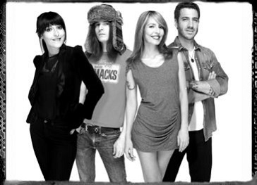

Dover el grupo de música rock Español

Las canciones de Dover son todas en inglés (exceptuando el cover Noche tras Noche, única canción del grupo cantada en español y que se incluía como Bonus Track en la re-edición
de su álbum "Sister" de 2001) y están compuestas por las hermanas Llanos. Amparo compone la música, mientras que Cristina escribe las letras.
El motivo de que las letras estén en inglés, según declaraciones del grupo, es debido a que sus influencias del rock siempre han sido angloparlantes y no se sienten cómodos utilizando letras
en español para sus canciones.
Follow the citi lights" hizo que su estilo musical cambiase, desde el rock alternativo al pop electrónico.
En
2016 el grupo se disuelve tras llevar 24 años juntos.
Amparo Llanos sigue su carrera musical por separado junto
a el bajista
Samuel Titos creando un nuevo grupo llamado
New Day con sonidos
mas Folk. La cantante
Cristina Llanos no se pronunciado al respecto y el batería
Jésus Antúñez
sigue su carrera como DJ.
Copyright 2017-2018 by David Muñoz Barras.
[ Salir ]